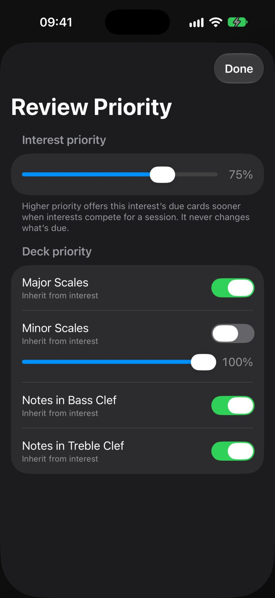
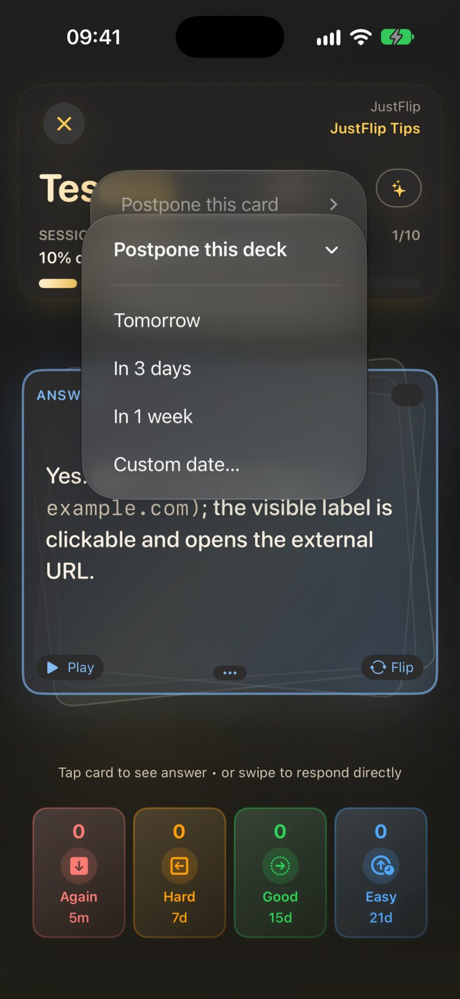
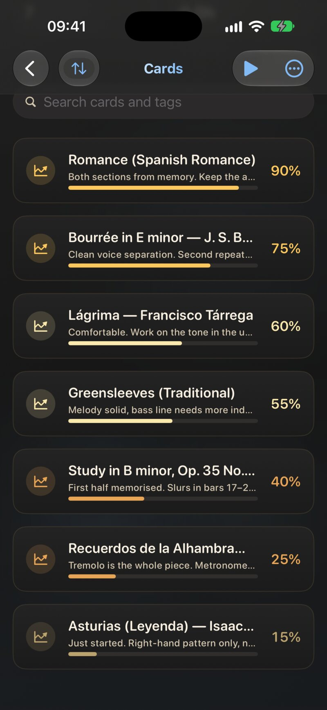

6.1 A ideia em um minuto
A memória se apaga numa curva. Logo depois de aprender algo, você o esquece rápido, e cada vez que se lembra de novo a curva fica mais suave. A repetição espaçada aproveita isso: ela mostra um cartão pouco antes de você esquecê-lo. Cada lembrança bem-sucedida empurra a próxima revisão para mais longe.
No JustFlip!, todo cartão carrega três números:
| Número | O que significa |
|---|---|
| Intervalo | Quanto falta para o cartão voltar, de minutos a meses |
| Facilidade | Quão rápido o intervalo cresce para este cartão. Começa em 2,5 |
| Data de revisão | O momento em que o intervalo acaba e o cartão fica pronto de novo |
A sua avaliação depois de cada virada muda a facilidade e o intervalo, e a data de revisão acompanha. Os botões de avaliação mostram o intervalo que cada escolha daria, então nada acontece pelas suas costas. Depois que você avalia, uma dica curta Próxima: … confirma quando você verá o cartão de novo.
6.2 Os cinco estágios
Todo cartão está em um de cinco estágios. O estágio é um rótulo que descreve o intervalo do cartão. Ele não decide o intervalo.
| Estágio | Significado | Intervalo típico |
|---|---|---|
| Não visto | Nunca estudado | — |
| Aprendendo | Aprendido há pouco, ou esquecido no estágio Revisando | de minutos a alguns dias |
| Revisando | O intervalo chegou a 7 dias | de uma a quatro semanas |
| Graduado | O intervalo chegou a 30 dias | meses |
| Reaprendendo | Um cartão Graduado que você esqueceu | passos curtos de novo |
Não visto ─avaliação─▶ Aprendendo ─7 dias─▶ Revisando ─30 dias─▶ Graduado
▲ │ │
└───── De novo ─────┘ De novo │
▼
ReaprendendoO que move um cartão entre os estágios:
- Qualquer avaliação leva um cartão Não visto para Aprendendo.
- Difícil, Bom ou Fácil fazem um cartão subir quando o novo intervalo passa de um limite: 7 dias o torna Revisando, 30 dias o torna Graduado. Os estágios acompanham o intervalo, então um Fácil num cartão novo não o gradua na hora. Ele ainda precisa conquistar seus 30 dias.
- De novo manda um cartão Aprendendo ou Revisando de volta para Aprendendo, e um cartão Graduado para Reaprendendo. Nos dois casos, o intervalo cai para 5 minutos.
A tela Estatísticas conta seus cartões por estágio, em Coleção: Novos, Aprendendo (que inclui Reaprendendo), Revisando e Graduados. O Capítulo 9 trata do resto dessa tela.
A porcentagem de Domínio num baralho ou interesse conta os cartões cuja última avaliação foi Bom ou Fácil. Não é a proporção de cartões Graduados. Um baralho pode mostrar domínio alto depois de uma única boa sessão, muito antes de qualquer cartão se graduar. O domínio diz como você foi recentemente. Os estágios dizem quão consolidado está o conhecimento.
6.3 Intervalos e facilidade
6.3.1 A primeira avaliação
Um cartão que você nunca avaliou, ou que acabou de esquecer, começa por passos iniciais fixos:
| Avaliação | Próxima revisão |
|---|---|
| De novo | em 5 minutos |
| Difícil | em 20 minutos |
| Bom | em 1 dia |
| Fácil | em 4 dias |
6.3.2 Cada avaliação depois disso
A partir daí, cada avaliação parte do intervalo que o cartão já tem:
- De novo recomeça: 5 minutos e uma facilidade menor.
- Difícil aumenta um pouco o intervalo, em 20 %, e reduz a facilidade.
- Bom multiplica o intervalo pela facilidade do cartão: cerca de 2,5× para um cartão típico.
- Fácil multiplica pela facilidade e por um bônus de 1,3, e aumenta a facilidade.
A facilidade é o ritmo de crescimento próprio do cartão. Cada Difícil e De novo faz o cartão crescer mais devagar dali em diante. Cada Fácil o faz crescer mais rápido. A facilidade nunca fica abaixo de 1,3 nem acima de 3,5, então um cartão difícil continua avançando, só que em passos menores.
Veja um cartão novo que você responde com Bom todas as vezes:
| Revisão | Intervalo | Estágio depois dela |
|---|---|---|
| 1ª | 1 dia | Aprendendo |
| 2ª | 2,5 dias | Aprendendo |
| 3ª | cerca de 6 dias | Aprendendo |
| 4ª | cerca de 16 dias | Revisando |
| 5ª | cerca de 39 dias | Graduado |
Cinco revisões bem-sucedidas espalhadas por uns dois meses, e o cartão passa a voltar só uma vez por mês ou menos.
Intervalos de dois dias ou mais ganham um pequeno ajuste aleatório de até ±10 %. Do contrário, cartões que você aprendeu juntos na mesma noite voltariam juntos para sempre, como um grande bolo no seu calendário. O ajuste os espalha por dias vizinhos. Os botões de avaliação sempre mostram o intervalo antes do ajuste, então a data real pode variar em mais ou menos um dia.
O JustFlip! usa uma variante do SM-2, o algoritmo por trás do SuperMemo e do Anki. Com facilidade E e intervalo atual I, uma avaliação primeiro atualiza a facilidade, limitada entre 1,3 e 3,5:
para De novo, Difícil, Bom e Fácil. Então o novo intervalo de um cartão que já está em andamento é:
De novo sempre dá 5 minutos. Intervalos de dois dias ou mais são então multiplicados por um fator aleatório:
6.3.3 Programação inteligente (Pro)
Em Ajustes › Comportamento, a chave Programação inteligente (marcada como BETA) troca os intervalos do SM-2 pelo FSRS-5, um agendador moderno. O FSRS marca cada revisão para o momento em que a sua chance de lembrar o cartão cai para cerca de 90 %. O objetivo é ter menos revisões com a mesma retenção. Ele só muda os intervalos de Difícil, Bom e Fácil. De novo continua trazendo o cartão de volta depois de 5 minutos.
O JustFlip! mantém os valores do SM-2 atualizados de qualquer forma, então você pode desativar a Programação inteligente quando quiser sem perder nada. É um recurso Pro. Sem o Pro, tocar na chave abre a tela do Pro.
6.4 O que “pendente” significa
Um cartão fica pendente quando a data de revisão dele já passou, a menos que você o tenha aposentado ou adiado. Cartões aposentados (Capítulo 2) e adiados (veja Adiar) mantêm a programação. Eles só não aparecem enquanto estão de lado.
Cartões que você nunca estudou não estão pendentes. Eles são novos. A sessão Hoje mistura os dois: primeiro os pendentes, depois os novos da sua cota diária. Os padrões são 20 Cartões por sessão e 10 Cartões novos por dia, ambos em Ajustes › Comportamento.
6.4.1 Quais cartões vêm primeiro
Na sessão de Hoje e no menu de revisão da tela Baralhos, o JustFlip! monta a fila assim:
- Os mais antigos primeiro. Cartões que ficaram pendentes num dia anterior vêm antes dos que ficaram pendentes depois.
- Um embaralhamento diário dentro de cada dia. Cartões pendentes no mesmo dia são misturados numa ordem que muda todo dia. Assim, uma sessão curta não pega sempre a mesma fatia do começo de um grande acúmulo.
- Os baralhos se revezam. Os cartões de cada baralho são intercalados com os dos outros, com pesos de acordo com a prioridade (veja Prioridades de revisão).
- Os cartões novos por último, até o que sobrar da sua cota diária e do tamanho da sessão.
- Cartões-irmãos de oclusão de imagem ficam espaçados, para que dois cartões da mesma imagem não apareçam um atrás do outro.
Uma revisão que você começa pela lista de cartões de um único baralho embaralha os cartões pendentes daquele baralho.
Um cartão que você avalia com De novo fica pendente outra vez em 5 minutos, mas não reaparece mais adiante na sessão em que você está. Você o encontra na próxima sessão. Se quiser uma segunda tentativa logo, termine a sessão e comece outra depois de alguns minutos.
6.4.2 Urgência
Interesses e baralhos também recebem uma pontuação de urgência, que controla o indicador colorido nas listas e a ordenação Por urgência. Ela combina vários sinais. Os mais fortes são a proporção de cartões pendentes e o atraso do cartão mais antigo. Os mais fracos são há quanto tempo você estudou o baralho, o domínio baixo e alguns cartões novos. Cartões aposentados e adiados não contam. Por algumas horas depois que você estuda um baralho, a urgência dele fica em zero, para que o indicador não acenda por causa das voltas de 5 minutos.
Ajustes › Ritmo de revisão muda a velocidade com que a urgência sobe: Tranquilo (devagar, com primeiros lotes menores), Constante (o padrão) ou Intenso (rápido, com a fila inteira visível). O ritmo de revisão nunca muda os intervalos em si.
6.5 Prioridades de revisão
Quando você tem mais cartões pendentes do que tempo, a prioridade decide de quem são os cartões que você vê primeiro. Todo interesse tem uma Prioridade de aprendizado de 0 % a 100 %, em passos de 5 %. Ela começa em 75 %. Cada baralho, por padrão, usa Herdar do interesse, ou define seu próprio valor.
Defina-a em qualquer um de três lugares:
- Num interesse: toque e segure o interesse na lista Interesses, escolha Editar interesse e mova o controle Prioridade de aprendizado.
- Num baralho: toque e segure o baralho, escolha Editar baralho, desative Herdar do interesse e mova o controle.
- Em todos os baralhos de um interesse de uma vez: na tela Baralhos, abra o menu Opções do baralho (o ícone de pasta) e escolha Prioridade de revisão. A folha mostra o controle Prioridade do interesse e, em Prioridade do baralho, uma linha para cada baralho.

6.5.1 Como funciona a mistura
A prioridade muda a ordem da fila, não o conteúdo. Pense em cada baralho distribuindo seus cartões pendentes em rodadas. Um baralho com o dobro da prioridade distribui duas vezes mais:
| Baralho | Prioridade | Ordem dos cartões dele na sessão |
|---|---|---|
| Espanhol | 100 % | 1º, 3º, 4º, 6º, 7º … |
| Química | 50 % | 2º, 5º, 8º … |
Com o padrão de 75 % em tudo, os baralhos simplesmente se alternam, um cartão de cada. Uma prioridade maior ganha mais espaço numa sessão limitada, e uma menor é empurrada para o fim.
Mesmo em 0 %, os cartões pendentes de um baralho continuam pendentes. Eles só são oferecidos depois de todo o resto. As contagens de pendentes no widget, em Hoje e na tela Baralhos ficam exatamente iguais quando você mexe num controle. A prioridade só importa quando uma sessão é limitada: em Hoje e no menu de revisão da tela Baralhos. A revisão de um único baralho não tem com quem competir.
6.6 Adiar
Às vezes um cartão não está errado, só não é a hora certa: semana de prova de outra matéria, férias, um baralho ao qual você vai voltar no mês que vem. Avaliar com De novo ou Difícil estragaria a programação dele. Adiar o deixa em espera, sem mexer na programação.
6.6.1 Como adiar
Durante qualquer revisão, toque no botão Adiar (o ícone de relógio no alto da tela de revisão). Escolha o escopo:
- Adiar este cartão
- Adiar este baralho
- Adiar este interesse
Depois escolha por quanto tempo: Amanhã, Em 3 dias, Em 1 semana ou Data personalizada… para escolher um dia em Retomar em. Uma espera dura até o início daquele dia, então “Amanhã” quer dizer o dia de amanhã inteiro, não 24 horas a partir de agora.

Os cartões em espera saem da sessão em andamento na hora. Se você adiar o baralho ou o interesse durante a revisão de um único baralho, a sessão termina, porque não sobra nada para revisar.
6.6.2 O que uma espera faz
Uma espera é um simples filtro. Nada é avaliado, o intervalo e a facilidade ficam como estão e o histórico do cartão não muda. Enquanto a espera durar:
| Onde | Cartões adiados |
|---|---|
| Hoje, o widget, as contagens de pendentes e a previsão | ficam de fora |
| Cartões pendentes e Cartões difíceis | ficam de fora |
| Cartões novos (menu da tela Baralhos) | ficam de fora, mesmo que nunca estudados |
| Todos os cartões | incluídos |
Se um cartão, o baralho dele e o interesse dele estiverem todos em espera, vale a data mais distante.
6.6.3 Como encerrar uma espera
As esperas terminam sozinhas na data que você escolheu. Para encerrar uma antes, abra a tela Baralhos daquele interesse e escolha Opções do baralho › Prioridade de revisão. Enquanto houver algo em espera, a folha tem uma seção Adiado com o número de cartões em espera e um botão para cada espera ativa:
- Retomar este interesse
- Retomar nome do baralho, um para cada baralho em espera
A seção Adiado lista só esperas de interesses e de baralhos. A espera de um único cartão entra no total, mas não tem botão de Retomar. Ela simplesmente acaba na data marcada. Para encurtá-la, abra a revisão Todos os cartões do baralho, que ignora as esperas. Quando o cartão aparecer, adie-o de novo com Amanhã.
Todos os cartões inclui de propósito os cartões aposentados e adiados. Use-o na véspera de uma prova, ou quando quiser passar por um baralho adiado mesmo assim. Suas avaliações ali contam como quaisquer outras.
6.7 Rastreadores de progresso (Pro)
Algumas habilidades não cabem num flashcard: uma peça que você está estudando no piano, uma técnica de escalada, um livro que você está lendo. Um rastreador de progresso é um cartão especial com um nome, notas opcionais e uma barra de progresso que você mesmo ajusta.
Para adicionar um, abra um baralho, toque no menu Mais ações e escolha Adicionar rastreador de progresso. Na primeira vez, uma breve introdução explica a ideia. Dê um nome ao rastreador (O que você quer acompanhar?) e, se quiser, notas. Depois, toque no rastreador e mova o controle Progresso, de 0 a 100 em passos de cinco, até refletir o quanto você sente que avançou.

O que um rastreador faz e não faz:
- Ele nunca é revisado. Os rastreadores ficam fora de todas as sessões de revisão, de Hoje, das contagens de pendentes, dos estágios das Estatísticas e de Ler cartões.
- Ele não conta para a sua sequência. Ninguém pergunta nada a você, então não há o que contar.
- Ele conta, sim, para o domínio do baralho. Um flashcard soma 1 ao domínio do baralho quando a última avaliação dele foi Bom ou Fácil. Um rastreador soma o próprio progresso: 60 % somam 0,6. Um baralho que só tem rastreadores mostra a média de progresso deles como domínio.
Um rastreador diz exatamente o que você disser a ele, nada mais. A ideia é essa, mas também significa que um rastreador em 100 % puxa o domínio de um baralho para cima tanto quanto um cartão que você realmente sabe. Seja honesto com o controle.
Os rastreadores de progresso são um recurso Pro. Sem o Pro, o item do menu tem um cadeado e abre a tela do Pro. Os rastreadores que você já tem ficam guardados em segurança. No lugar deles, o baralho mostra uma única linha dizendo quantos rastreadores contém, e eles voltam assim que o Pro estiver ativo de novo.
6.8 Cartões aposentados
Aposentar um cartão (“eu sei isto, pare de me perguntar”) o tira de Pendentes e Difíceis sem apagar o histórico. Isso é explicado no Capítulo 2. Para a programação, lembre-se de duas coisas:
- Um cartão aposentado mantém o intervalo, a facilidade e a data de revisão. Reative-o e ele recomeça exatamente de onde parou.
- Um cartão aposentado continua contando para o domínio, mas não conta mais para a urgência nem para as contagens de pendentes.
6.9 Referência rápida
| Ajuste ou valor | Onde | Padrão |
|---|---|---|
| Passos iniciais (De novo / Difícil / Bom / Fácil) | embutido | 5 min / 20 min / 1 dia / 4 dias |
| Facilidade inicial | embutido | 2,5 (faixa de 1,3 a 3,5) |
| Revisando / Graduado | embutido | intervalo ≥ 7 / ≥ 30 dias |
| Cartões por sessão | Ajustes › Comportamento | 20 |
| Cartões novos por dia | Ajustes › Comportamento | 10 |
| Programação inteligente (Pro) | Ajustes › Comportamento | desativada |
| Ritmo de revisão | Ajustes › Ritmo de revisão | Constante |
| Prioridade de aprendizado | Editar interesse / Editar baralho / Prioridade de revisão | 75 %, baralhos herdam |
| Adiar | tela de revisão, ícone de relógio | — |
| Sugestão de aposentar | tela de resultados | intervalo ≥ 90 dias e 4 acertos seguidos |